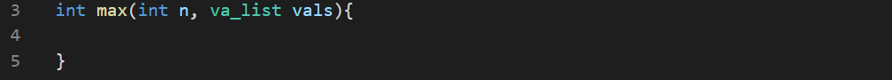

The va_list can be passed as an argument.

In order to invoke this function, we need two parameters. So we use a wrapper function. It's called coupling.
Max function will look something like this.
The whole code will be: